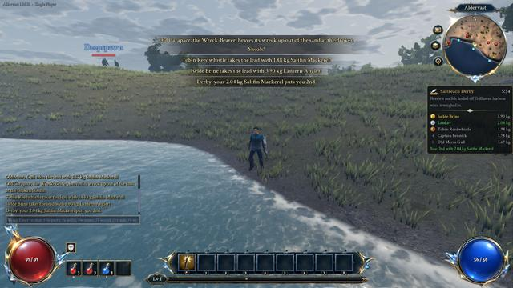

Professions Gathering, fishing and the recipes for alchemy, smithing, enchanting and cooking.
Herbalism and mining gather from nodes in the open world. Gathering takes a few seconds, shown on a cast bar: you kneel to pull a herb or swing a Mining Pick at a vein, and moving, being hurt, using a skill, casting a line or mounting up stops it. A node shows its name in a colour for your skill: red if you are not skilled enough yet, then orange, yellow and green as your skill passes it (each teaches less), and grey once there is nothing more to learn. An ore vein holds several loads, a herb or a fallen log is picked once, and a spent node comes back after two or three minutes. Fallen logs need no skill. Every gather also gives some character experience.
Skinning needs a Skinning Knife in your bags. A beast you kill lies where it fell for 45 seconds, and you can kneel and skin it for leather; some beasts also give a hide of their own. Ore is smelted into bars at the forged-iron anvil outside every smithy, two ore to the bar. Smiths forge weapons and armour from the bars, and stitch leathers and hides into armour that always carries a matching property, such as cold resistance from rimefur.
Better tools are forged by smiths from bars: a Silversteel Pick or Embersteel Pick , a Herbalist's Sickle or Silversteel Sickle , and a Silversteel Flaying Knife . Each works quicker, and often gives one more of what you gather. A sickle is never needed for herbs, but it helps. Find Herbs and Find Minerals, chosen with the button at the corner of the minimap, show every herb or vein within 240 metres, and arrows on the minimap's rim point to the nearest ones worth gathering.
Fishing works on the sea, lakes and rivers; casting into a school of fish gives better catches. You fish on foot: gathering or mounting up takes your line in. Every fish is weighed when you land it, and your heaviest of each kind is kept as a record. Bait and lures help: Nightcrawlers bring bites sooner, a Glimmer Lure makes the rarer fish of each water twice as likely, and a Lantern Lure brings rarer and bigger fish and more sunken coffers. One is on the line at a time, and it stays on when you log out. Every half hour Hesk Wadebury runs the Saltreach Derby off Gullhaven harbour, a twelve-minute contest for the heaviest sea fish.
The four crafting professions are trained by people in town: Nim Saltwhistle for alchemy, Brannoc Ironvein and Grenna Coalbrow for smithing, Selwyn Ashby for enchanting, and the fishers Pell Rushwick and Hesk Wadebury for cooking.
Gathering Skinning Fishing The Saltreach Derby Smelting Alchemy Smithing Enchanting Cooking
Gathering9 Profession Mining Skill needed 1 Tool Mining Pick ; Silversteel Pick or Embersteel Pick are quickerTime 2.6 seconds Yields Iron Ore 2–4Loads 2–3 (a rich vein, 12% of them, holds two more) Bonus finds Tinker's Shard (5%)Found in Brightmeadow Vale , Thornwood , Saltreach Coast , Cinderreach Wastes , Frostspire Peaks Skill experience 12 (orange), 8 (yellow), 4 (green) a load Profession Mining Skill needed 20 Tool Mining Pick ; Silversteel Pick or Embersteel Pick are quickerTime 2.8 seconds Yields Silversteel Ore 2–3Loads 2–3 (a rich vein, 12% of them, holds two more) Bonus finds Prism Shard (4%), Tinker's Shard (5%)Found in Frostspire Peaks Skill experience 30 (orange), 20 (yellow), 9 (green) a load Profession Mining Skill needed 30 Tool Mining Pick ; Silversteel Pick or Embersteel Pick are quickerTime 3 seconds Yields Embersteel Ore 1–3Loads 2–3 (a rich vein, 12% of them, holds two more) Bonus finds Lattice Dust 3–8 (10%), Prism Shard (4%)Found in Cinderreach Wastes Skill experience 45 (orange), 29 (yellow), 14 (green) a load Profession Herbalism Skill needed 1 Tool None needed; Herbalist's Sickle or Silversteel Sickle are quicker Time 1.7 seconds Yields Meadowleaf 1–3Loads Picked once Bonus finds Meadowleaf 1–2 (12%), Essence of Vigor (1%)Found in Brightmeadow Vale Skill experience 10 (orange), 7 (yellow), 3 (green) Profession Herbalism Skill needed 8, or any while Moonmoss and Duskcap wants it Tool None needed; Herbalist's Sickle or Silversteel Sickle are quicker Time 1.7 seconds Yields Duskcap 1–3Loads Picked once Bonus finds Duskcap 1–2 (12%), Lattice Dust 2–4 (8%)Found in Thornwood Skill experience 18 (orange), 12 (yellow), 5 (green) Profession Herbalism Skill needed 15 Tool None needed; Herbalist's Sickle or Silversteel Sickle are quicker Time 1.8 seconds Yields Saltbloom 1–3Loads Picked once Bonus finds Saltbloom 1–2 (12%), Essence of Storms (1%)Found in Saltreach Coast Skill experience 24 (orange), 16 (yellow), 7 (green) Profession Herbalism Skill needed 25 Tool None needed; Herbalist's Sickle or Silversteel Sickle are quicker Time 1.9 seconds Yields Ashroot 1–2Loads Picked once Bonus finds Ashroot (12%), Essence of Haste (1%)Found in Cinderreach Wastes Skill experience 32 (orange), 21 (yellow), 10 (green) Profession Herbalism Skill needed 30 Tool None needed; Herbalist's Sickle or Silversteel Sickle are quicker Time 1.9 seconds Yields Frostpetal 1–2Loads Picked once Bonus finds Frostpetal (12%), Essence of Frost (1%)Found in Frostspire Peaks Skill experience 40 (orange), 26 (yellow), 12 (green) Profession Anyone Time 2.2 seconds Yields Seasoned Timber 1–3Loads 1–2 Found in Brightmeadow Vale , Thornwood Skinning12 Beast Meadow Boar Found in Brightmeadow Vale Skill needed The beast's level less 5 (at least 1) Tool Skinning Knife ; Silversteel Flaying Knife is quickerTime 2.2 seconds Gives Cured Leather or, from level 20, Thick Leather , 1–2More from A magic beast gives one more of each, a rare one two more, and a better chance of its hide Beast Grey Wolf Found in Brightmeadow Vale Skill needed The beast's level less 5 (at least 1) Tool Skinning Knife ; Silversteel Flaying Knife is quickerTime 2.2 seconds Gives Cured Leather or, from level 20, Thick Leather , 1–2More from A magic beast gives one more of each, a rare one two more, and a better chance of its hide Beast Thornback Stalker Found in Thornwood , Rootdeep Warrens Skill needed The beast's level less 5 (at least 1) Tool Skinning Knife ; Silversteel Flaying Knife is quickerTime 2.2 seconds Gives Cured Leather or, from level 20, Thick Leather , 1–2More from A magic beast gives one more of each, a rare one two more, and a better chance of its hide Beast Thornwood Ogre Found in Thornwood Skill needed The beast's level less 5 (at least 1) Tool Skinning Knife ; Silversteel Flaying Knife is quickerTime 2.2 seconds Gives Cured Leather or, from level 20, Thick Leather , 1–3More from A magic beast gives one more of each, a rare one two more, and a better chance of its hide Beast Red Fox Skill needed The beast's level less 5 (at least 1) Tool Skinning Knife ; Silversteel Flaying Knife is quickerTime 2.2 seconds Gives Cured Leather or, from level 20, Thick Leather , 1–2More from A magic beast gives one more of each, a rare one two more, and a better chance of its hide Beast Ember Hound Found in Cinderreach Wastes , The Cinder Forge Skill needed The beast's level less 5 (at least 1) Tool Skinning Knife ; Silversteel Flaying Knife is quickerTime 2.2 seconds Gives Cured Leather or, from level 20, Thick Leather , 1–2; Cinderhide (35%)More from A magic beast gives one more of each, a rare one two more, and a better chance of its hide Beast Rimefang Wolf Found in Frostspire Peaks , Spire of the Sundered Crown Skill needed The beast's level less 5 (at least 1) Tool Skinning Knife ; Silversteel Flaying Knife is quickerTime 2.2 seconds Gives Cured Leather or, from level 20, Thick Leather , 1–2; Rimefur Pelt (35%)More from A magic beast gives one more of each, a rare one two more, and a better chance of its hide Beast Frost Troll Found in Frostspire Peaks Skill needed The beast's level less 5 (at least 1) Tool Skinning Knife ; Silversteel Flaying Knife is quickerTime 2.2 seconds Gives Cured Leather or, from level 20, Thick Leather , 1–3; Rimefur Pelt (50%)More from A magic beast gives one more of each, a rare one two more, and a better chance of its hide Beast The Rime Colossus Found in Spire of the Sundered Crown , Frozen Reliquary Skill needed The beast's level less 5 (at least 1) Tool Skinning Knife ; Silversteel Flaying Knife is quickerTime 2.2 seconds Gives Cured Leather or, from level 20, Thick Leather , 1–4; Rimefur Pelt every timeMore from A magic beast gives one more of each, a rare one two more, and a better chance of its hide Beast Calathrax, Elder Wyrm Found in The Shattered Ring Skill needed The beast's level less 5 (at least 1) Tool Skinning Knife ; Silversteel Flaying Knife is quickerTime 2.2 seconds Gives Cured Leather or, from level 20, Thick Leather , 1–4; Wyrmscale every timeMore from A magic beast gives one more of each, a rare one two more, and a better chance of its hide Beast The White Troll Skill needed The beast's level less 5 (at least 1) Tool Skinning Knife ; Silversteel Flaying Knife is quickerTime 2.2 seconds Gives Cured Leather or, from level 20, Thick Leather , 1–2; Rimefur Pelt every timeMore from A magic beast gives one more of each, a rare one two more, and a better chance of its hide Beast Old Mossback Skill needed The beast's level less 5 (at least 1) Tool Skinning Knife ; Silversteel Flaying Knife is quickerTime 2.2 seconds Gives Cured Leather or, from level 20, Thick Leather , 1–4More from A magic beast gives one more of each, a rare one two more, and a better chance of its hide Fishing6 Kind Lake Region Thornwood Skill 10 Rod Fisher's Rod ; Hesk's Prize Rod is quickerOpen water Mossback Carp (55%, skill 10), Reedbank Perch (45%)In a school Mossback Carp (74%, skill 10), Reedbank Perch (20%)Schools 2 at a time Kind Lake Region Frostspire Peaks Skill 25 Rod Fisher's Rod ; Hesk's Prize Rod is quickerOpen water Frostgill Pike (68%, skill 25), Brook Char (32%, skill 5)In a school Frostgill Pike (86%, skill 25), Brook Char (10%, skill 5)Schools 2 at a time Kind River Region Thornwood Skill 5 Rod Fisher's Rod ; Hesk's Prize Rod is quickerOpen water Brook Char (46%, skill 5), Reedbank Perch (54%)In a school Brook Char (72%, skill 5), Reedbank Perch (22%)Schools 2 at a time The Saltreach Derby1 Every half hour at Gullhaven When Every half hour, at a quarter past and a quarter to the hour, for 12 minutes. It is called to everyone in the world 3 minutes before it starts Where Off Gullhaven harbour: sea fish landed within 320 metres of Hesk Wadebury count Winner The heaviest single fish; on a tie, whoever landed theirs first 1st place 250 gold, Saltreach Derby Trophy , Lantern Lure × 2, and the first time you win, Hesk's Prize Rod 2nd place 120 gold and Glimmer Lure × 2 3rd place 60 gold and Glimmer Lure Everyone Nightcrawlers × 5 for weighing inRival anglers Old Marra Gull, Captain Fennick, Iselde Brine, Tobin Reedwhistle and Little Wren fish it from the shore, each landing a few fish over the contest and now and then a big one Board A live board under the minimap shows the time left, the top five with medals, and your own place. Banners call the start and the end Achievement Champion of the Saltreach “Forty years I've fished this harbour. The big ones come in with the tide, dearie.”Old Marra Gull
“I've pulled sharks out of the Saltreach bigger than you. This is a pond to me.”Captain Fennick
“Fish the schools. Where the water boils, the heavy ones feed.”Iselde Brine
“Herring, herring, herring. One day a mackerel. One day.”Tobin Reedwhistle
“Grandad says if I win I can have the trophy for my shelf!”Little Wren

Smithing17 Needs Iron Ore × 4Makes Smith's Whetstone × 1Experience 20 Needs Iron Bar × 2, Cured Leather × 1Makes Armourer's Plate × 1Experience 25 Needs Iron Bar × 2, Seasoned Timber × 1Makes Herbalist's Sickle × 1Experience 30 Forge a magic weapon at your item level.
Needs Iron Bar × 5, Seasoned Timber × 3Makes A magic weapon, at your item level Experience 60 Forge a magic piece of armour at your item level.
Needs Iron Bar × 5, Cured Leather × 4Makes A magic piece of armour, at your item level Experience 70 Needs Silversteel Bar × 1, Saltbloom × 2Makes Glimmer Lure × 3Experience 60 Stitch a magic piece of evasion armour that always adds life.
Needs Thick Leather × 6, Iron Bar × 2Makes A magic piece of evasion armour, at your item level Always has maximum Life Experience 90 Needs Silversteel Bar × 3Makes Socketing Shard × 2Experience 80 Needs Silversteel Bar × 4, Seasoned Timber × 2Makes Silversteel Pick × 1Experience 90 Needs Silversteel Bar × 2, Thick Leather × 2Makes Silversteel Flaying Knife × 1Experience 90 Stitch a magic piece of armour lined with rimefur: it always resists cold.
Needs Rimefur Pelt × 4, Thick Leather × 4Makes A magic piece of armour, at your item level Always has Cold Resistance Affix tiers Never the weakest tier (where the item level allows) Experience 110 Needs Silversteel Bar × 3, Seasoned Timber × 1Makes Silversteel Sickle × 1Experience 100 Stitch a magic piece of armour faced with cinderhide: it always resists fire.
Needs Cinderhide × 4, Thick Leather × 4, Embersteel Bar × 1Makes A magic piece of armour, at your item level Always has Fire Resistance Affix tiers Never the weakest tier (where the item level allows) Experience 130 Needs Embersteel Bar × 1, Silversteel Bar × 1, Lattice Dust × 20Makes Lantern Lure × 3Experience 140 Forge a rare item with stronger properties.
Needs Silversteel Bar × 6, Embersteel Bar × 3, Lattice Dust × 200Makes A rare item for any slot, at your item level Affix tiers Never the weakest tier (where the item level allows) Experience 250 Needs Embersteel Bar × 4, Silversteel Bar × 2, Seasoned Timber × 2Makes Embersteel Pick × 1Experience 200 Forge a rare piece of armour scaled with wyrmscale: it always resists every element.
Needs Wyrmscale × 2, Silversteel Bar × 4, Thick Leather × 4Makes A rare piece of armour, at your item level Always has all Elemental Resistances Affix tiers Never the 2 weakest tiers (where the item level allows) Experience 300